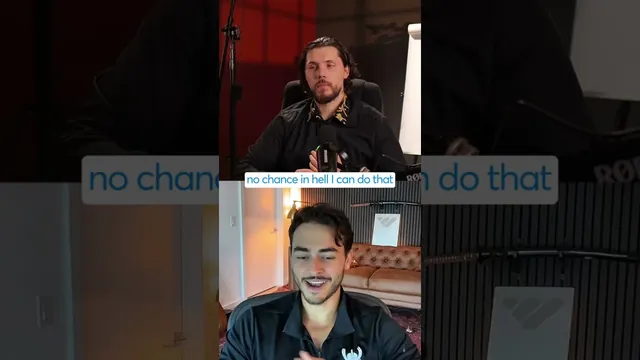

바이브 코딩으로 만든 100만 달러 AI 스타트업

원본 영상 보기 →
- 복제 가능한 것과 불가능한 것의 경계가 선명해졌어요
- 바이브 코딩은 "0 → MVP"를 압축하지, "MVP → 엔터프라이즈 제품"을 없애지 않아요
- 비개발자도 프로토타이퍼가 될 수 있어요
한 줄 요약
바이브 코딩으로 누구나 앱을 빠르게 찍어내는 시대잖아요. 그래서 한 AI 세일즈 스타트업 창업자에게 이런 질문이 들어왔어요. "당신 제품을 통째로 복제할 수 있나요?" 답이 재미있습니다. "UI는 스크린샷으로 베낄 수 있어도, 백엔드의 메모리·지식그래프·세일즈팀을 굴리는 에이전트, 그리고 세일즈 훈련에서 나오는 판단력과 취향은 못 베낀다"는 거예요.
전체 내용 정리
"지금 실력 좋은 바이브 코더가 당신 제품을 통째로 복제할 수 있나요?"
진행자는 창업자가 자기 스타트업의 기능 대부분을 초기에 직접 만든다는 점을 먼저 확인했어요. 그리고 이렇게 물었죠. "2026년 8월 현재, 기술 지식이 있는 뛰어난 바이브 코더가 회사에 속해 있든 혼자 일하든, 당신 제품 전체를 그대로 카피할 수 있나요?"
창업자의 답은 "전혀 불가능하다"였습니다.
프론트엔드, 즉 UI는 화면을 스크린샷으로 찍어 모델에게 "이거 똑같이 복제해줘"라고 시키면 만들 수 있어요. 하지만 딱 거기까지라는 거죠.
UI 너머에 있는 것 — 메모리, 지식그래프, 세일즈팀을 굴리는 에이전트
창업자는 자기 제품이 UI만으로 설명되지 않는 이유를 구체적으로 들었어요.
라이브 스트리밍되는 AI, 백엔드의 방대한 메모리 처리, 대규모 지식그래프 구성, 그리고 강력한 도구 호출(tool calling) 기능이 얹혀 있다고요. 무엇보다 세일즈팀 전체를 통째로 대신 굴려주는 에이전트와 MCP가 붙어 있다고 했습니다.
그런데 여기서 솔직한 고백이 나와요. "그런 건 나도 어떻게 만드는지 전혀 모른다"고 인정한 거죠.
자신은 창의적인 편이라 어떻게 생겨야 하는지, 어떻게 작동해야 하는지 구상하고 앉아서 설계할 수는 있어요. 하지만 그걸 자기가 다 만들어서 엔터프라이즈 고객에게 팔 수 있다고 착각할 만큼 어리석지는 않다고 말했습니다.
진짜 해자는 코드가 아니라 판단력과 취향이에요
진행자도 같은 지점을 짚었어요. 자기가 이 제품을 베끼려고 마음먹으면 개발자를 고용해서 할 수는 있다고요. 하지만 결국 전부 창업자의 판단력(judgment)과 취향(taste)으로 귀결된다는 겁니다.
수많은 세일즈 담당자를 훈련시키는 노하우, 관리자가 소프트웨어와 어떻게 상호작용하고 싶어 하는지에 대한 UI 경험 설계, 성과를 어떻게 평가하고 점수를 매기는지에 대한 판단. 이런 것들은 개발자를 붙인다고 복제되지 않아요.
진행자는 질문 의도를 이렇게 설명했습니다. "AI 시대에 바이브 코딩으로 다들 빠르게 뭔가를 출시할 수 있게 됐으니, 창업자 입장에서 레버리지가 어디에 있는지를 늘 찾으려는 것"이라고요.
창업자의 실제 작업 방식 — 본인이 MVP까지, 월드클래스 개발팀이 엔터프라이즈로
창업자는 자신이 기능이 어떤 모습이어야 하고 어떻게 작동해야 하는지, 기본 동작까지 직접 만든 다음 그것을 전문가들에게 넘긴다고 설명했어요.
그 개발팀은 "월드클래스"이고, 그들이 넘겨받아 제대로 된 데이터베이스 구조, 제대로 된 캐싱, 제대로 된 보안 등을 붙여 엔터프라이즈에 팔 수 있는 수준으로 완성합니다. 창업자의 몫은 "컨셉"까지예요.
그는 이게 큰 회사들과 경쟁할 때의 이점이라고 했어요. "아이디어에서 MVP까지 내가 만들고, 개발팀이 그걸 고쳐주는 데까지 일주일이면 된다"는 거죠.
터미널도 몰랐던 사람이 지금은 직접 기능을 프로토타이핑해요
창업자는 스타트업을 시작하기 전까지 터미널을 열어본 적도, 터미널이 뭔지도 몰랐다고 합니다. 평생 맥에서 터미널 앱을 켜본 적이 없었고, 개발자를 어떻게 고용하는지도 전혀 몰랐다고요.
지금은 꽤 잘 안다고 스스로 평가하면서, 자기가 앉아서 기능의 기본 동작을 만들고 이를 전문가에게 넘길 수 있다는 게 "말도 안 되는 일"이라고 표현했어요.
핵심 인사이트
- 복제 가능한 것과 불가능한 것의 경계가 선명해졌어요: AI로 UI와 겉모습은 스크린샷 한 장이면 베껴집니다. 방어선은 백엔드의 데이터 구조(메모리·지식그래프)와 도메인에서 축적된 판단력으로 옮겨갔어요.
- 바이브 코딩은 "0 → MVP"를 압축하지, "MVP → 엔터프라이즈 제품"을 없애지 않아요: 창업자 본인이 컨셉과 기본 동작까지 만들고, DB·캐싱·보안은 여전히 전문 개발팀이 맡는 분업 구조가 유지됩니다.
- 비개발자도 프로토타이퍼가 될 수 있어요: 터미널조차 몰랐던 사람이 1년 안에 직접 기능을 설계·구현하는 수준에 도달했다는 건, 도구 진입장벽이 판단력 있는 도메인 전문가 쪽으로 크게 낮아졌다는 신호죠.
오늘 당장 해볼 것
- 내 사업에서 "경쟁자가 화면만 보고 베낄 수 있는 부분"과 "우리 데이터·고객 응대 노하우·평가 기준이 있어야만 재현되는 부분"을 종이 한 장에 두 칸으로 나눠 적어보세요. 두 번째 칸이 얇으면 그게 취약점이에요.
- 외주나 내부 개발팀에 프로토타입을 맡길 때, 화면 흐름과 "이 기능이 어떻게 작동해야 하는지"까지는 내가 먼저 정의해서 넘기세요. 데이터베이스 구조·보안·확장성은 전문가 몫으로 명확히 선을 그으시고요.
- 우리 서비스의 "평가·점수화 로직"(고객을 어떻게 분류하고 우선순위를 매기는지)을 문서로 정리해두세요. 이건 코드보다 복제하기 어려운 자산이고, 나중에 자동화를 맡길 때도 핵심 명세가 됩니다.